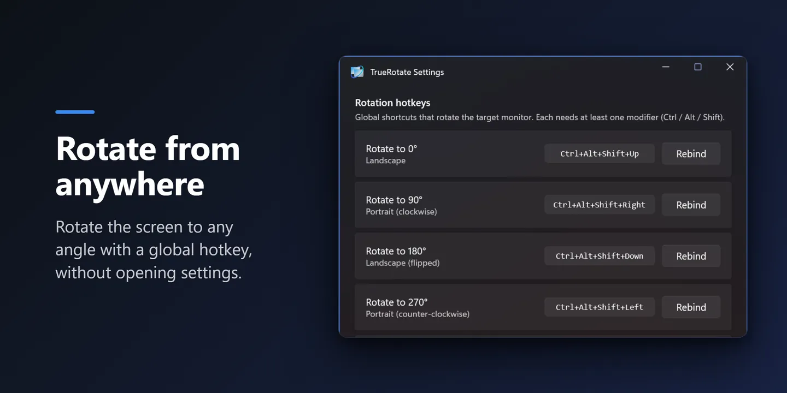
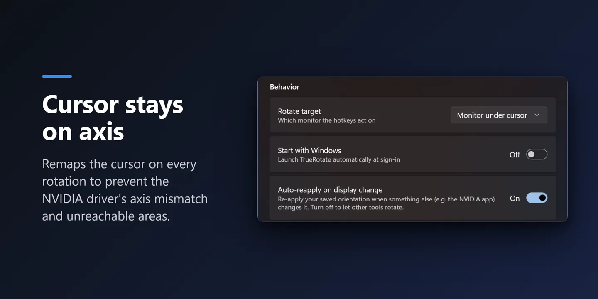
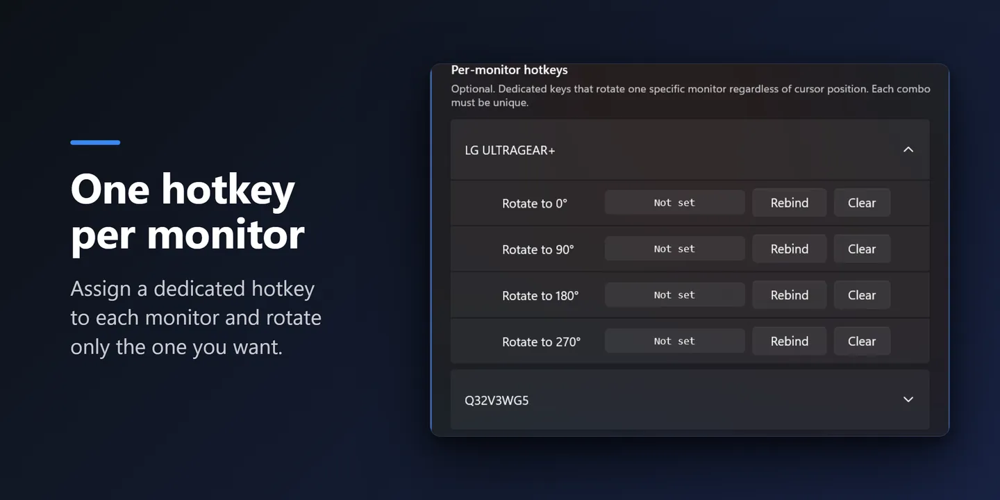

The NVIDIA screen-rotation bug
Rotated a monitor on an NVIDIA system and your mouse suddenly moves on the wrong axis? You push the cursor sideways and it travels up and down instead — and part of the screen becomes a dead zone the cursor can't reach.
It usually starts right after the NVIDIA app or Control Panel changes any display setting, and a reboot doesn't fix it. This is a well-known NVIDIA driver bug — not something you did wrong.
How TrueRotate fixes it
TrueRotate rebuilds the cursor's coordinate mapping every time it rotates, using the Windows Connecting and Configuring Displays (CCD) API with forced mode re-enumeration. The wrong-axis behavior and dead zones simply never appear.
Rotate any monitor to 0°, 90°, 180° or 270° from a global hotkey or the tray menu. As long as you rotate from TrueRotate, the mouse tracks normally on every display — even in multi-monitor and multi-GPU setups.
Features
Global rotation hotkeys
Ctrl+Alt+Shift+Arrow by default, fully rebindable. Rotate from anywhere without opening Settings.
Fixes the NVIDIA axis bug
Remaps the cursor on every rotation, so the wrong-axis movement and dead zones never come back.
Per-monitor hotkeys
Give each display its own dedicated rotation keys, independent of cursor position.
One-key cycle
Step through 0 → 90 → 180 → 270 with a single shortcut.
Auto-reapply
If another app (like the NVIDIA panel) changes the orientation, TrueRotate restores your saved one.
Clean & quiet
Starts with Windows, Fluent (WinUI 3) settings, 7 languages. No ads, no tracking.
A look inside



Default hotkeys
| Shortcut | Rotation |
|---|---|
| Ctrl+Alt+Shift+↑ | 0° — landscape |
| Ctrl+Alt+Shift+→ | 90° — portrait |
| Ctrl+Alt+Shift+↓ | 180° — landscape (flipped) |
| Ctrl+Alt+Shift+← | 270° — portrait (flipped) |
By default a hotkey rotates the monitor under your cursor. All shortcuts are rebindable in Settings.
Get TrueRotate
One click to install, and it updates automatically through the Store.
Developer or prefer to build it yourself? Get the source on GitHub →